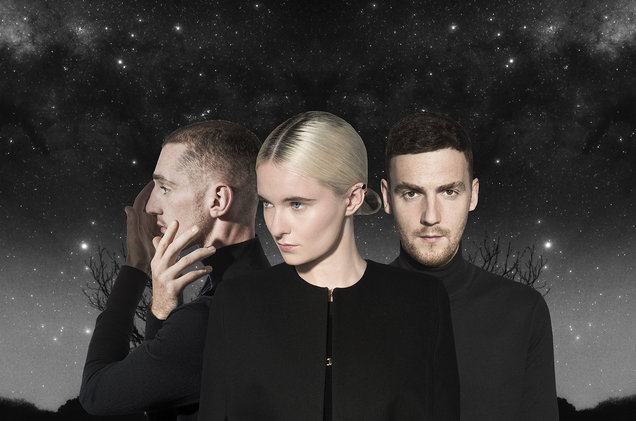
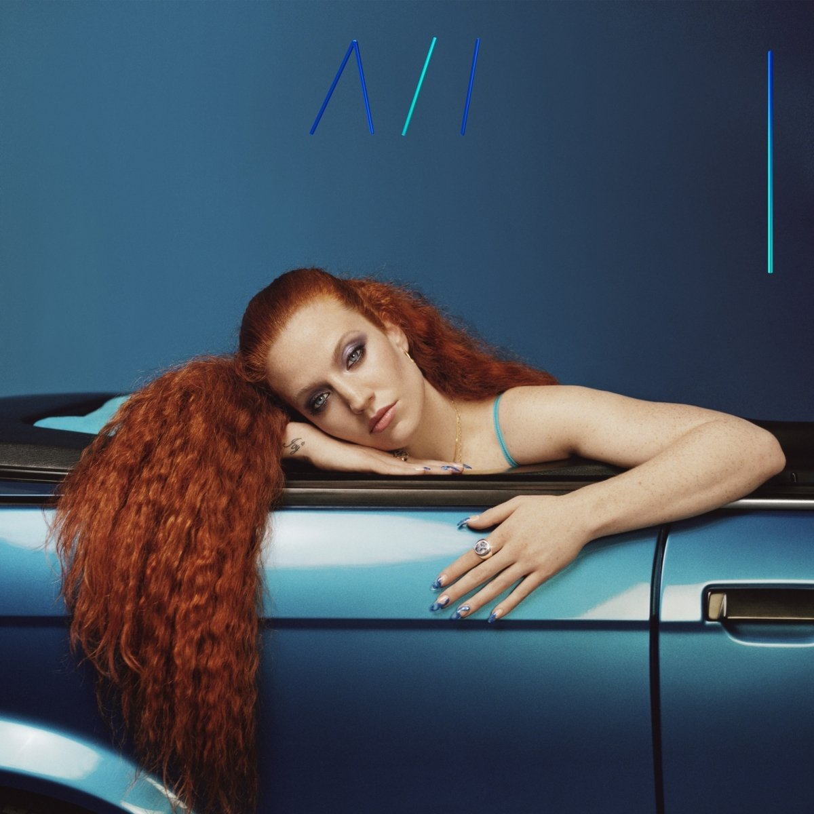
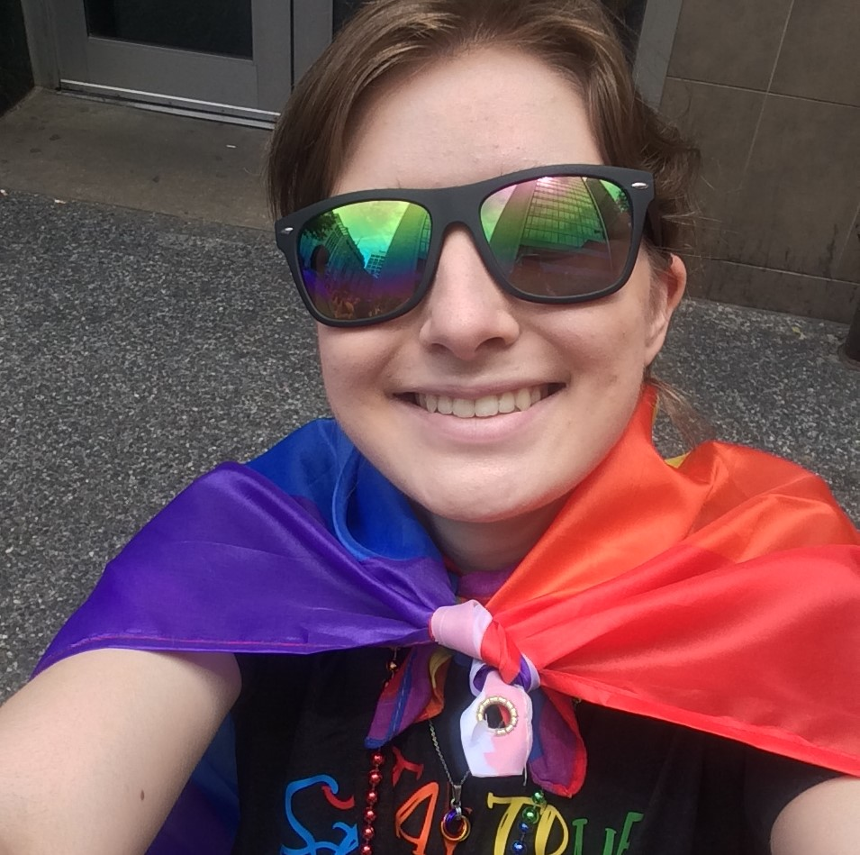

Here are some pictures of my beautiful family.
On the top left, we have a Schmotzer family portrait of my amazing parents and myself. My parents have always been there for me to provide all the love and support I would ever need to accomplish my goals and be as successful as possible. There's so much in my life that I would not have been able to do if it wasn't for them.
On the bottom left, there's a picture of myself and one of my closest friends, Lauren. We met in high school when we ran cross country and track together and she is like my big sister.
On the top right, I have a picture of some of the friends I have made in college. We all live together on the fourth floor of Panther Hall and I consider them to be my floor family. I always look forward to coming back to the dorm to see them all and to spending time with each other on the weekends playing video games, going out, and getting dinner.
In the bottom right picture is myself with two of my close friends, Allison and Nadine, who I have known since 2nd grade and 6th grade respectively. They are two people I have known the longest and have always been there for me. We have been through so much together so they are part of the family I made in the beginning of my life and still maintain to this day.
Finally, in the middle, we have my "sister" Zoey (the Brittany) and my "brother" Tucker (the Corgi). I am an only child so I consider them to be my siblings :)
Entertainment
As many of you may be able to relate, media is certainly a prominent element in my life. One form of media I often find myself consuming is comedic videos on Youtube. I greatly enjoy comedy both watching it and practicing it so watching comedic material both puts me in a postive mood and inspires me. I also listen to music on Youtube and Spotify on a daily basis. I listen to music while doing homework (I am currently listening to Lady Gaga as I type this), running, walking on campus, or just while relaxing. I have found music to be a powerful tool to influence and/or further propel the current mood that you are experiencing, whether it's romantic, light-hearted, heavy with sadness, or that you are feeling powerful. Music often helps my enter a headspace where I am focused, energized, inspired, and feel like total boss.


Community
I believe that I belong to a few different communities and some of those include the Pitt community, the Pittsburgh community, and the engineering community at Pitt. Each one of these communities feel like a big family that has a mutual understanding for our shared environment as well as a shared appreciation for the community that we have created. I love the kindness of the Pittsburgh community, the solidarity and support that the engineering community displays, and the energy and history the Pitt community possesses. However, there is one particular community that holds a special place in my heart and that is the LGBTQ+ community. I am proud to say that I am a member of this strong community and that it has made a great deal of impact in my life. Being a part of this community has help me develop a greater understanding and appreciation of people's differences and unique characteristics, has made me more empathetic, and has taught me to be shamelessly proud of who I am. I also believe that by being a part of this community, it has helped me teach others about our experiences, has possibly changed people's understanding of the community, and even provides me with a level of power to change people's opinions in the future.

School
So I was born and raised here in Pittsburgh and went to public school in the suburbs of the South Hills. I attended Keystone Oaks high school where I ran varsity track and cross country all four years, took AP and honors classes, and put a great deal of time and effort into my studies in order to give myself the best opportunity to be accepted into any college that I applied to. I am happy to say that my success in high school has helped me to get here where I stand today at the University of Pittsburgh. I mention my performance in high school because I believe that has had a major impact on where I am today. The habit of working hard and the determination I developed in high school certainly has helped me acheive success in college today. At Pitt, I am majoring in Materials Science and Engineering with the hopes of also getting a minor in Theatre. After Pitt, I hope to work on developing environmently-friendly plastics either with a company or by doing research.